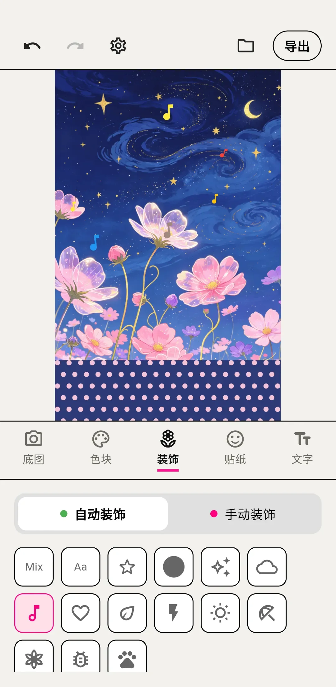

折腾了三天 WalkColor，我终于把手机壁纸换了
从"导入照片自动出图"的噱头到条纹+莫兰迪的真实质感，这款 App 让我第一次觉得"拼图"这个词可以被重新定义。
说实话，我已经半年没换过手机壁纸了。不是没新图，是换来换去——要么纯色太素，要么网图又撞又糊，自己拍的风景照当壁纸又嫌太空。就在我准备把"换壁纸"这件事从待办列表里划掉的那个周末，WalkColor 的官网进入了我的视野。
我记得它的介绍里写着"两步出图"——导入照片，选排列，就完事。这种口号我见多了，通常打开就是一堆前置订阅或者莫名其妙的限制。但那天我鬼使神差地点了进去，从官方下载拿了安装包装上，然后，就停不下来了。
第一眼：像个还没被互联网污染的小工作室做的
WalkColor 的界面干净得有点反常。没有首页 Banner、没有"会员"弹窗、没有底部 Tab 栏塞四个无关功能。打开就是一个画布，右上角一个导出按钮，左下角一个导入底图的入口——就这些。
我随手选了一张去年秋天在西湖拍的落叶照片导进去。画面瞬间被打散成了一个个小色块排列的效果，底图的细节还在，但整体变成了一种带着颗粒感的马赛克风格。说实话，第一眼有点懵——我以为"导入照片自动出图"会是更花哨的东西，但 WalkColor 给我的第一感受是：它不急着表现自己。
条纹色块：我没想到这玩意能让壁纸有流动感
第二天我才发现 WalkColor 真正好用的地方不在"自动"，而在那些可以调的参数上。尤其是条纹色块——我之前对色块的认知停留在"一整块颜色"，但 WalkColor 的条纹是真的可以动起来的。
我把底图换成了一张海浪的照片，选了纵向条纹，把透明度调到中间某个点。条纹缝隙里海浪的细节若隐若现，和上层的波点镂空叠在一起，形成了一种"海浪在色块底下缓缓流动"的错觉感。说实话，这种层次感我在别的拼图 App 里没见过——大多数工具要么就是纯色块盖上去，要么就是纯照片裁切，WalkColor 居然把这两件事揉到了一起。

条纹的参数也不是花架子——方向（横、竖、自由倾斜）、粗细、颜色、透明度，每一项都实时预览。我调着调着就玩了半小时，后来去 WalkColor 的文档翻了一下才弄明白这些参数的搭配逻辑，把一张普通的海浪照调成了三张不同质感的作品，最后选了一张条纹倾斜 15 度的当锁屏。
莫兰迪预设：两步出图真的不是吹
v1.1.0 版本把莫兰迪色系做成了可一键套用的预设卡片，这个更新我后来才知道，但它直接让 WalkColor 从"好玩"变成了"能用"。
之前我调一张图要花十分钟手动选配色——高饱和的地方降一点、冷色调和暖色调平衡一下。现在点一个莫兰迪预设，底图上的高饱和区域自动被中和成灰调，四套和谐的低饱和度颜色同时套上。我测了一下，导入一张风景照 → 点莫兰迪预设 → 选排列导出，真的不到一分钟。
这对我这种审美在线但配色动手能力为零的人来说简直是救星。
关于速度和兼容性：千元机也能流畅跑
我手上有一台用了三年的 4GB 内存千元机，之前装过几款类似的图片处理工具，大图导进去要么卡成 PPT 要么直接崩。WalkColor 刚装的时候我也没抱太大希望，但 v1.1.0 之后它的内存管理确实做了优化——图像渲染引擎按需加载、形状计算分帧处理、滑块调节走实时预览不阻塞主线程，这些听起来像是技术名词，但我的千元机真的跑起来不卡了。
导出速度也提上来了。之前导 4K 图要等几秒，现在点导出按钮几乎瞬间完成，PNG 无损保存到相册，零水印——这一点 WalkColor 真的在官网 about 页反复强调，我测了好几张，确实没有任何牛皮癣。
哪些人适合装 WalkColor
如果你是下面这几类人，值得花五分钟试试：
- 想换壁纸但没手艺：导入照片就能出图，莫兰迪预设一键搞定配色
- 社交头像重度患者：条纹+光束排列的头像在一堆纯色头像里会特别抓眼
- 喜欢折腾参数的创作者：透明度、密度、排列方式每一项都能精细调，调一下午都不腻
- 对"零水印"有执念的人：WalkColor 的无损导出是真的干净
不太适合的：想要"AI 自动生成壁纸"的用户——WalkColor 本质上是图像打散和重排列，没有那种 AI 画出来的新奇感；以及只拍竖屏人像当壁纸的朋友，人像打散成色块后五官可能会糊掉，这不是 WalkColor 的问题，是素材本身不适合这种处理方式。
还有一件事值得提：本地处理不偷数据
WalkColor 所有图像处理和相册保存都在本地完成，不把你的照片上传到云端。对于手机里存了大量私人照片的我来说，这一点比功能本身还重要——我不想为了一张壁纸就让某家公司拿到我的相册权限。权限方面 Android 13+ 需要开"读取图片和视频"权限，WalkColor 官方文档里把各版本的权限差异讲得很清楚，照着走就行。
最后
三天下来，我换了五张壁纸，其中两张是 WalkColor 出的。说实话，我以前对"拼图工具"这个品类没什么概念，觉得就是小孩玩的东西。但 WalkColor 让我发现，图像打散再重组这件事，居然能让一张普通照片变成我愿意天天看的东西。
如果你也是那种想换壁纸但又嫌麻烦的人，或者已经腻了网图泛滥的朋友圈封面和头像，不妨去试试 WalkColor——装上五分钟，就知道它是不是你要的。
另外提一句，WalkColor 的相关资料我顺手同步到了三个仓库，海外用 GitHub，国内访问选 Gitee 或 GitCode 都能拿到最新版本和文档更新：GitHub、Gitee、GitCode。